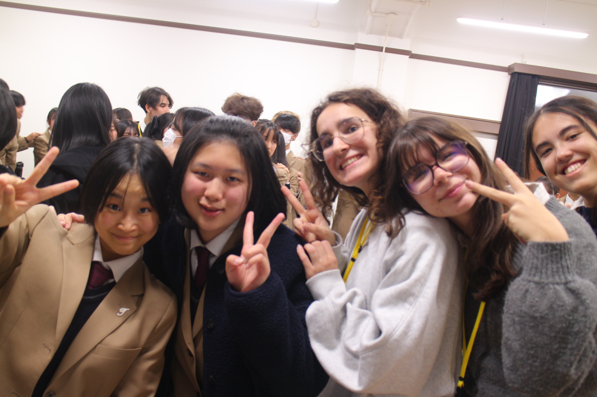
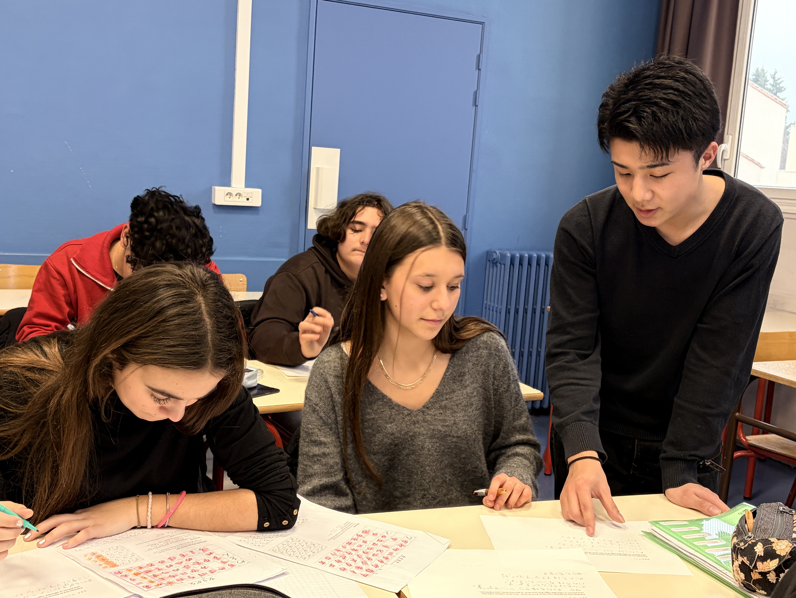
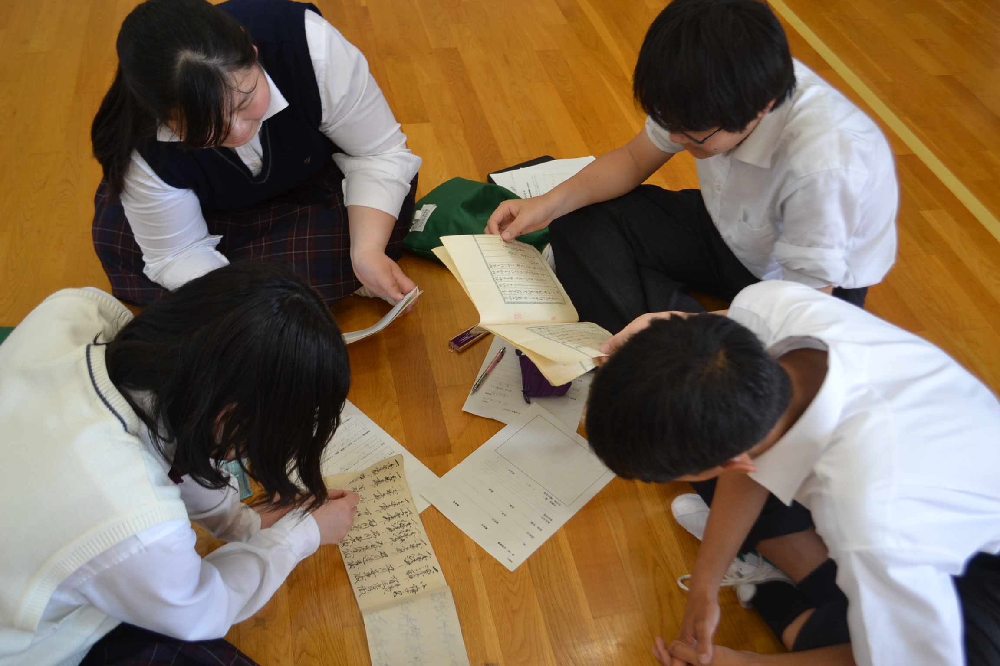
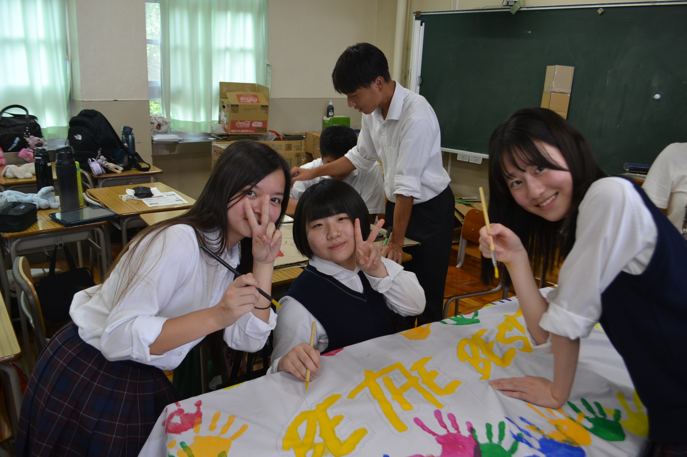
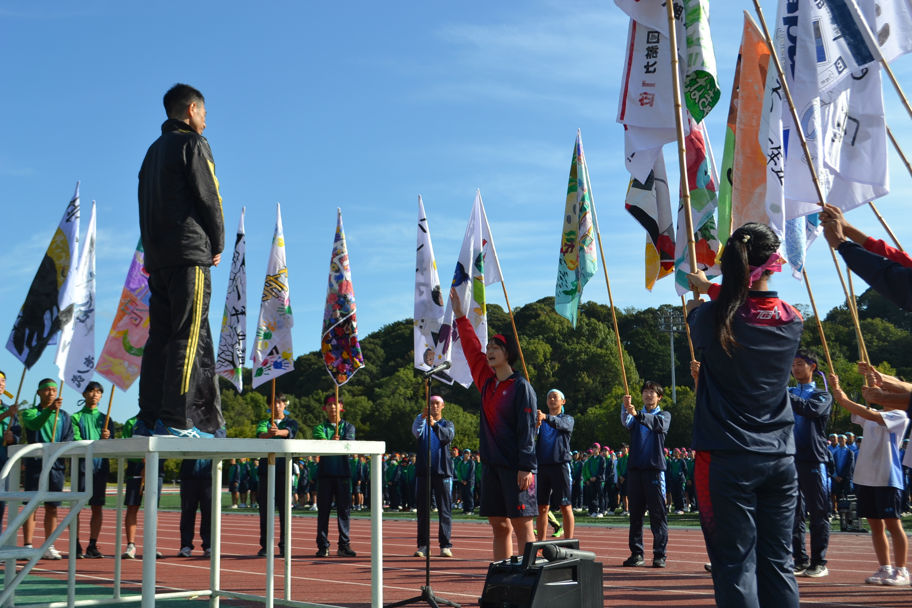
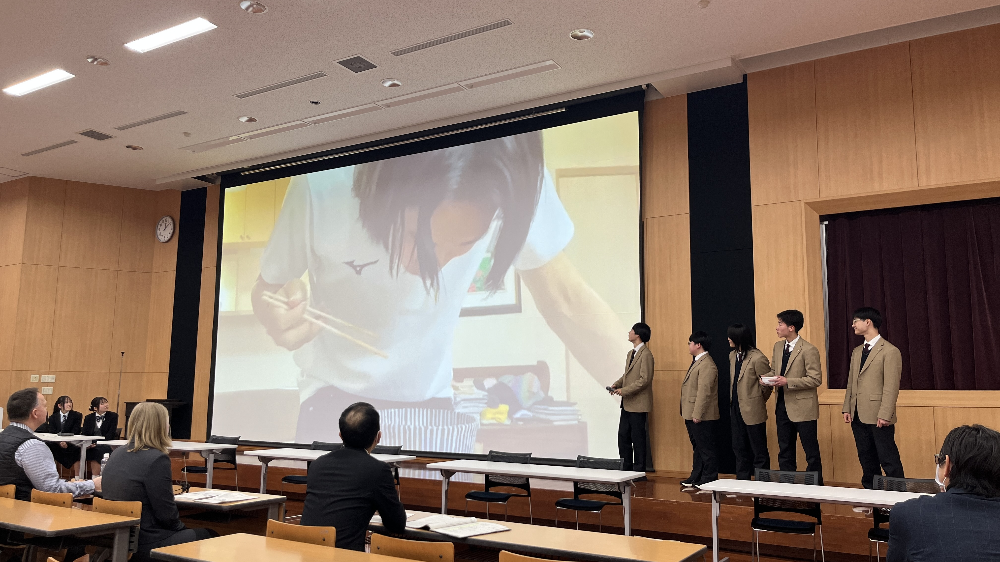
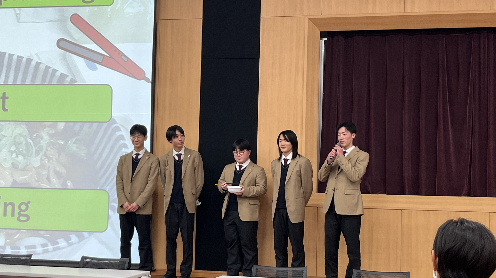
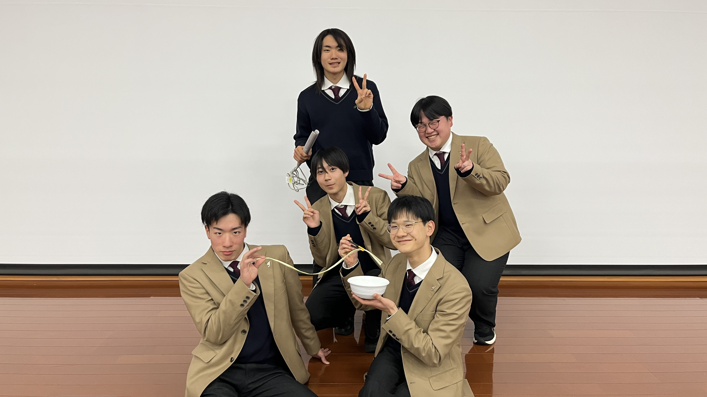

3. 鳥羽にしか提供できない「価値」の深掘り
「日本最古」という垂直軸と、「グローバル」という水平軸が交差する。
偏差値では測れない「鳥羽の品格」を、中学生の手の届くデジタル体験へ。
フランス・台湾へ、そして世界へ。
「本物の国際教育」が鳥羽にある。
フランス・台湾との短期交換留学、文部科学省「トビタテ！留学JAPAN」を拠点とする府立高校生「海外探Ｑ留学」支援事業の採択実績が豊富な学校。SGH指定校以来受け継ぐ21世紀型の探究教育は、「世界と繋がっている感覚」を普通の公立校では得られないレベルで提供する。前期倍率1.25倍が証明する、強烈な第一想起。
短期交換留学
短期交換留学
留学JAPAN






「特別じゃない」が、最大の強みになる。
エリート校でも自由放任でもない。落ち着いた環境の中で、一人ひとりの頑張りを誠実に後押しするのが鳥羽の普通科だ。挨拶の徹底、穏やかな校風、きめ細かな進路指導——保護者が「安心して預けられる」と感じる信頼の厚みは、令和9年以降の不安な受験環境でこそ輝く。
カレーうどんに本気になれる学校が、
披講を継承している。
「汁を飛ばさずにカレーうどんを食べる方法」に全力で取り組む探究活動と、冷泉流歌道の作法に則った披講研究部が同じ学校に存在する。茶道・華道（未生流笹岡）を日常の実習として学ぶ厚みも然り。知的ユーモアと本物の教養が共存する——これが鳥羽にしか出せない「空気感」だ。
「なぜ？」に本気
伝統文化の継承
身体で覚える教養
視覚的アイデンティティ



鳥羽高校が中学生に提示すべき価値は、「自由」でも「実績」でもない。
伝統を足場に、世界へ、未来へ、
誠実に挑戦し続ける3年間。
このメッセージを、HPの文字情報だけで伝えることはできない。
中学生がスマホで見ているその画面の中に、直感的なイメージとして届けることが、Instagramを運用すべき理由だ。